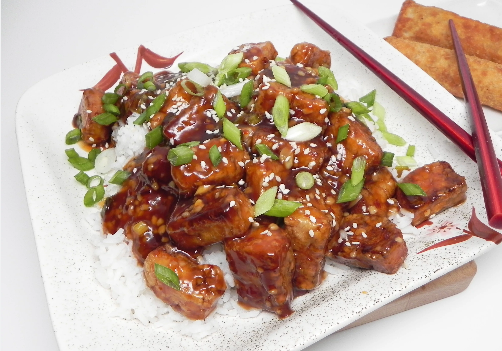

General Tso's Tofu

What could be better than General Tso's Tofu?
General Tso's Tofu is a perennial family favorite meal for any night
Ingredients
- Tofu
- Cornstarch
- Egg
- Green Onions
- Ginger
- Garlic
- Cooking Wine
- Rice Vinegar
Steps
- Create Cornstarch slurry with egg and mix cubed tofu in slurry
- In a hot wok, cook slurried tofu
- Remove Tofu to a plate, add fresh oil and cook ginger and garlic
- Add sauce
- Prosper again